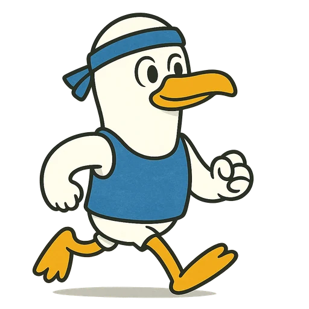
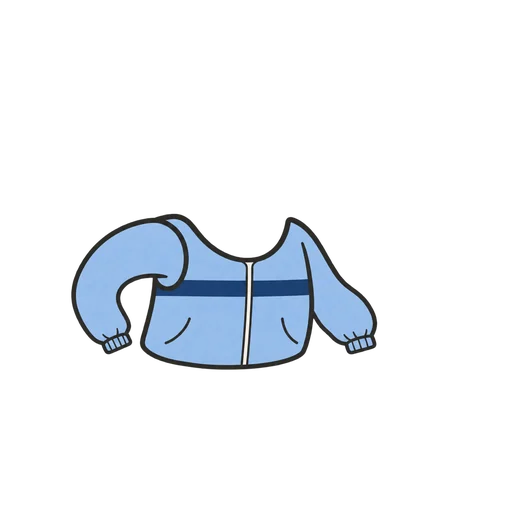
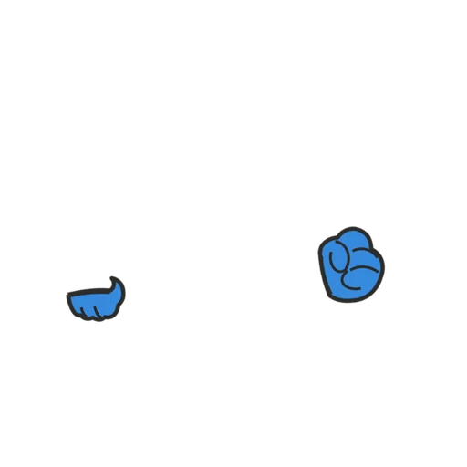
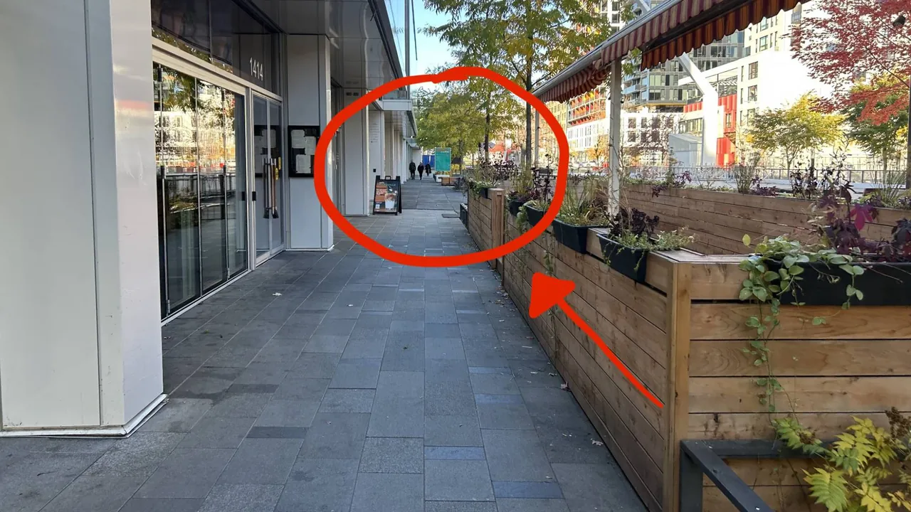

SEE YOU SUNDAY!
Nov 8 · meet 10:00 · run 10:15
Dress like me!
(Beta)



4°C
feels −1 °C
Cloudy
wind 22 km/h
Long sleeve + windbreaker
Also: tights, light gloves, headband
Bring: a light rain jacket, just in case.
New here? You're welcome!
Run/walk friendly · No experience required.
Stooopid Run CrewForecast from Sun 9:12 a.m. · Open-Meteo / ECCC GEM (CC BY 4.0)
Lost? Find your Flock!
Café Tranquille
meet 10:00, run 10:15

View from Rue St. Catherine.
Stooopid Run CrewMap © OpenStreetMap contributors · Protomaps